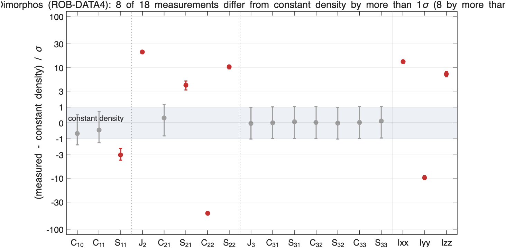
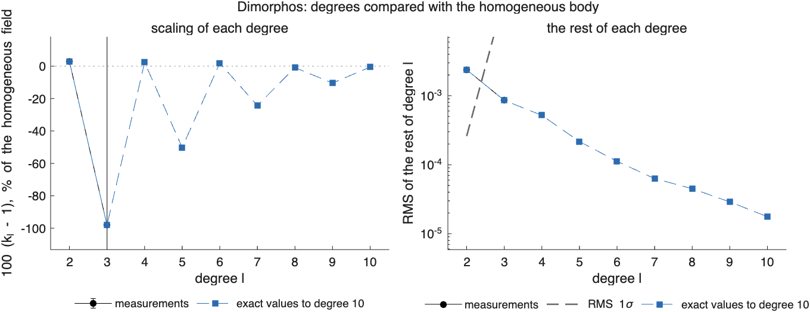
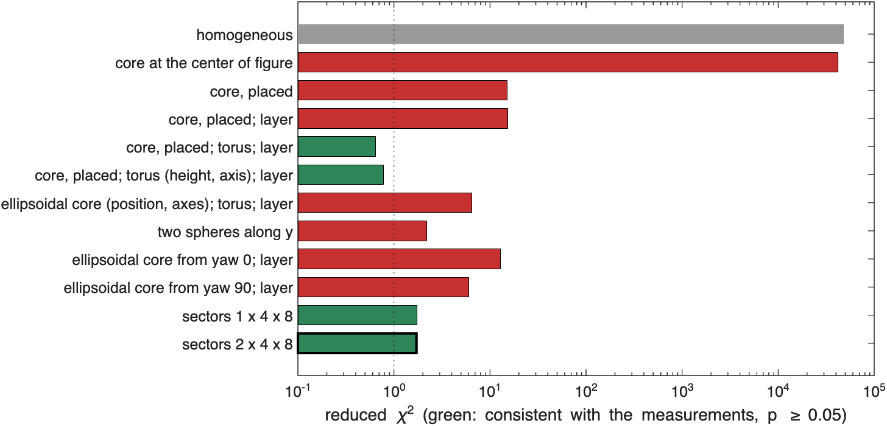
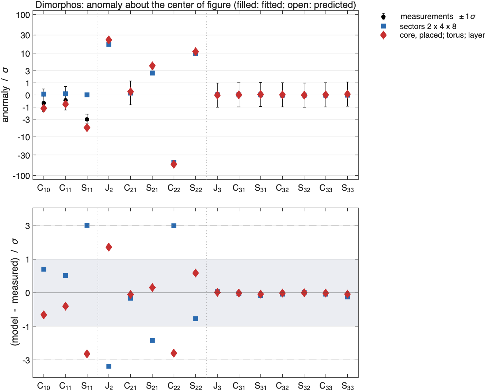
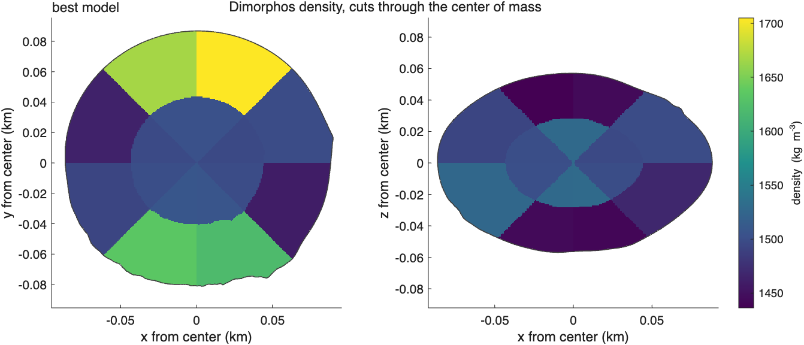
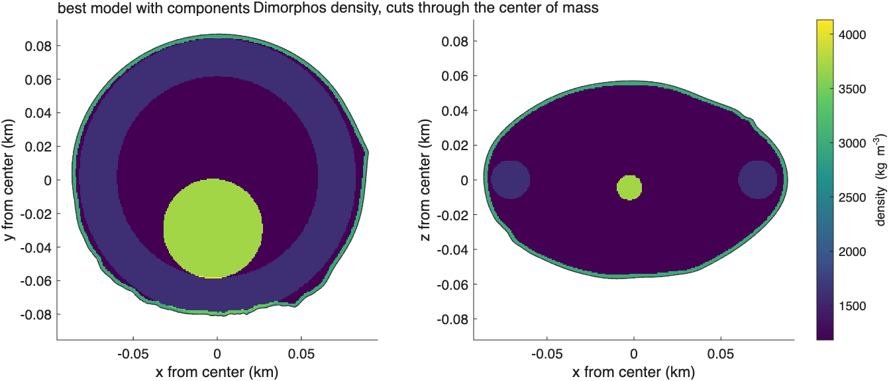
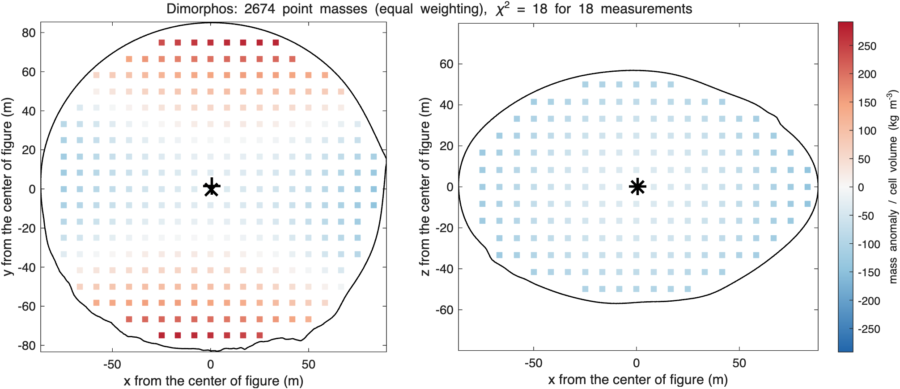

ROB-DATA4: Dimorphos#
Last edited October 27, 2026
Result. changes sign: the homogeneous body's elongation along x is cancelled by mass along ±y. Two families of interiors fit the coefficients and the inertia: smooth sector grids with denser material toward ±y (reduced 1.7, ), and a dense core 31 m toward −y with a dense equatorial torus and a dense crust (0.65). The surface point at the −y end decides between them: the core model predicts the lander's acceleration to 0.2% and 0.2°, the sector grids miss it by 10%. The package's mass corresponds to 1540 kg/m³.
Reading#

Dimorphos (ROB-DATA4): anomaly about the center of figure, degrees 1 to 3
center of mass - center of figure: [-0.16 -1.77 -0.24] m +- [0.43 0.59 0.42] m, |offset| 1.79 m
chi-square of the offset: 9.591 for 3 degrees of freedom
degree RMS anomaly RMS 1-sigma ratio k_l +- 1-sigma residual chi2 / dof
1 6.635e-03 3.097e-03
2 2.454e-03 2.601e-04 1.02884 +- 0.00170 4203 / 4
3 1.209e-03 2.677e-02 0.02075 +- 10.02662 0.006562 / 6
one compact mass with the same degrees 1 and 2: NaN% +- NaN% of the mass (NaN kg) at [NaN NaN NaN] m +- [NaN NaN NaN] m from the center of figure
(not converged: the central mass is not distinguished from 0, or no single compact mass fits)- Degree 2 is scaled by +2.9% only, but its rest has 4200 for 4 degrees of freedom: is −1.0 × 10⁻³ against the homogeneous +3.9 × 10⁻³ (−50σ: it changes sign), and is +10σ.
- The inertia moments differ from the homogeneous body's by +13σ (), −10σ () and +7σ (): mass moved from the x-direction toward y.
- The center of mass is 1.8 m toward −y (3σ in y).
- No compact mass converges from degrees 1 and 2: an elongation that changes sign cannot come from one mass near the center.

Models#

model chi2/nu p params components (relative density +- 1 sigma, kg/m^3; centers from the center of figure, m)
homogeneous 4.82e+04 0 0.0 background 1540
core at the center of figure 4.18e+04 0 1.0 background 1338 | core +3162 +- 18 at [0 0 0]
core, placed 15.2 1.4e-37 4.0 background 1490 | core +792 +- 23 at [5 52 4]
core, placed; layer 15.4 1.1e-35 5.0 background 1343 | core +1413 +- 70 at [4 38 1] | regolith +1240 +- 101
core, placed; torus; layer 0.647 0.8 6.0 background 1183 | core +2530 +- 853 at [-3 -31 -5] | torus +419 +- 170 at [0 0 0] | regolith +1787 +- 799
core, placed; torus (height, axis); layer 0.78 0.64 9.0 background 1198 | core +2434 +- 1020 at [-3 -31 -5] | torus +401 +- 1572 at [0 0 2] | regolith +1697 +- 1709
ellipsoidal core (position, axes); torus; layer 6.51 2.5e-09 9.0 background 1216 | core +2229 +- 2534 at [2 25 5] | torus +273 +- 391 at [0 0 0] | regolith +1823 +- 2650
two spheres along y 2.21 0.015 8.0 background 1497 | plus +2569 +- 11329 at [-12 61 4] | minus +2926 +- 11346 at [-21 -60 -13]
ellipsoidal core from yaw 0; layer 12.9 9.3e-23 8.0 background 1690 | core -1690 +- 1154 at [36 -6 19] | regolith -504 +- 1838
ellipsoidal core from yaw 90; layer 6.02 3.3e-09 8.0 background 1423 | core +991 +- 234 at [5 45 4] | regolith +652 +- 242
sectors 1 x 4 x 8 1.73 0.05 5.3 background 1540 | s111 -106 +- 66 | s112 -88 +- 66 | s113 -92 +- 66 | s114 -109 +- 66 | s115 -115 +- 66 | s116 -112 +- 66 | s117 -114 +- 66 | s118 -117 +- 66 | s121 +8 +- 56 | s122 +172 +- 59 | s123 +148 +- 58 | s124 -43 +- 55 | s125 -96 +- 57 | s126 +65 +- 54 | s127 +34 +- 55 | s128 -103 +- 55 | s131 -37 +- 56 | s132 +102 +- 58 | s133 +89 +- 57 | s134 -85 +- 56 | s135 -54 +- 55 | s136 +148 +- 54 | s137 +109 +- 54 | s138 -81 +- 55 | s141 -118 +- 66 | s142 -108 +- 66 | s143 -111 +- 66 | s144 -111 +- 66 | s145 -113 +- 66 | s146 -108 +- 66 | s147 -109 +- 66 | s148 -117 +- 66
sectors 2 x 4 x 8 1.71 0.05 4.8 background 1540 | s111 -11 +- 51 | s112 -10 +- 51 | s113 -10 +- 51 | s114 -11 +- 51 | s115 -11 +- 51 | s116 -11 +- 51 | s117 -11 +- 51 | s118 -11 +- 51 | s121 -39 +- 51 | s122 -29 +- 51 | s123 -31 +- 51 | s124 -42 +- 51 | s125 -41 +- 51 | s126 -38 +- 51 | s127 -39 +- 51 | s128 -43 +- 51 | s131 -40 +- 51 | s132 -32 +- 51 | s133 -34 +- 51 | s134 -41 +- 51 | s135 -43 +- 51 | s136 -37 +- 51 | s137 -38 +- 51 | s138 -43 +- 51 | s141 -11 +- 51 | s142 -11 +- 51 | s143 -11 +- 51 | s144 -10 +- 51 | s145 -11 +- 51 | s146 -11 +- 51 | s147 -11 +- 51 | s148 -11 +- 51 | s211 -96 +- 50 | s212 -79 +- 50 | s213 -82 +- 50 | s214 -96 +- 50 | s215 -99 +- 50 | s216 -95 +- 50 | s217 -97 +- 50 | s218 -103 +- 50 | s221 -13 +- 44 | s222 +154 +- 45 | s223 +131 +- 45 | s224 -54 +- 43 | s225 -72 +- 44 | s226 +91 +- 42 | s227 +59 +- 43 | s228 -99 +- 43 | s231 -47 +- 44 | s232 +94 +- 45 | s233 +80 +- 44 | s234 -81 +- 44 | s235 -42 +- 43 | s236 +164 +- 42 | s237 +127 +- 42 | s238 -76 +- 43 | s241 -104 +- 50 | s242 -95 +- 50 | s243 -96 +- 50 | s244 -94 +- 50 | s245 -96 +- 50 | s246 -92 +- 50 | s247 -93 +- 50 | s248 -102 +- 50
best: sectors 2 x 4 x 8- A core alone placed by its profile goes 52 m toward +y (reduced 15), with a layer 38 m (15): the profile has its lowest point on the side opposite the center-of-mass offset, because one body cannot produce the change of .
- A core with a torus and a dense layer: 0.65, with the core 31 m toward −y (+2530 ± 850 kg/m³), the torus +419 ± 170 and the crust +1790 ± 800 kg/m³. The torus and the crust put mass at the equator and outside, the core breaks the symmetry along y. The uncertainties are large: with 8 numbers resolved (degree 2 and three moments), the three densities and the position share them.
- Two dense spheres along y (2.2) and an elongated dense core along y (6.0) come close but are rejected.
- Sectors: one or two shells reach 1.7 with the largest consistent regularization, denser bands toward ±y and lighter toward ±x and the poles. The two-shell grid has the fewest effective parameters (4.8) and is listed as the best model by that rule.



How far the models reach#
fitted to chi2/nu chi2/n fitted chi2/n others
degrees 1-2 2.18 1.04 0.00196
degrees 1-3 1.71 1.26 -
Fraction of each degree's anomaly (exact values) reproduced, 1 - |model - given|^2/|given|^2:
fitted to 1 2 3 4 5 6 7 8 9 10
degrees 1-2 0.29 0.99 -0.03 0.37 -0.06 0.00 0.00 0.14 -0.14 -0.91
degrees 1-3 -0.02 0.98 -0.09 0.37 -0.09 0.01 -0.04 0.15 -0.08 -0.81
The sector model fitted to degree 2 reproduces 99% of degree 2 of the exact values and about a third of degree 4, but none of degrees 3 and 5–10, and only 29% of degree 1. Degree 3, at about 10⁻² 1σ, is not measured at this precision; the model is good to degree 2.
Point masses#


equal weighting: 2674 points every 8.3 m, lambda 8.04e-09, chi2 18 for 18 measurements; positive 5.46e+07 kg at [1 2 0] m, negative -5.46e+07 kg at [0 -0 -0] m
sensitivity weighting: 2674 points every 8.3 m, lambda 3.06, chi2 18 for 18 measurements; positive 1.6e+08 kg at [0 0 0] m, negative -1.6e+08 kg at [0 -1 1] mThe point masses form a four-lobed pattern about the center: lighter along ±x, denser along ±y. The positive and negative parts both have their centroids at the center, so their mass-weighted centroids say nothing here: the anomaly is a quadrupole, the change of , not an offset mass.
Surface point#
surface point [-0.0 -80.8 -11.4] m; models consistent with the coefficients and inertia
U (m^2/s^2) |a| (m/s^2) |a| vs % angle deg
given 2.451945e-03 3.588064e-05 0.000 0.000
homogeneous 2.325828e-03 3.109979e-05 -13.324 0.854
4 core, placed; torus; layer 2.477202e-03 3.582358e-05 -0.159 0.190
5 core, placed; torus (height, axis); layer 2.473888e-03 3.564033e-05 -0.670 0.230
10 sectors 1 x 4 x 8 2.364278e-03 3.240002e-05 -9.701 0.668
11 sectors 2 x 4 x 8 2.355223e-03 3.215641e-05 -10.379 0.679The surface point is at the −y end, 81 m from the center. The homogeneous body predicts 13% too little acceleration there. Of the four models consistent with the coefficients and the inertia, the two core models predict it to 0.2% and 0.7%, the two sector grids to −9.7% and −10.4%: the sectors spread the mass excess along ±y over the whole volume, the core model concentrates it toward −y, under the lander. The surface point selects the core model.
Surface point scan#
projects/hera_hlp6/rob_surface_point.m adds to the core model a sphere of 10 m radius 12 m or 25 m under the
point, with its relative density held at each value:
ROB-DATA4: surface point [-0.0 -80.8 -11.4] m, given |a| 3.588064e-05 m/s^2
depth m drho chi2/nu p |a| vs % angle deg core, torus, layer (relative densities, kg/m^3)
12 -1500 132 0 -4.67 2.52 +1366 at [-3 -44 -15] m, +502, -1092
12 -1000 0.594 0.85 -4.54 0.16 +2419 at [-3 -33 -5] m, +391, +1641
12 -500 0.547 0.88 -2.36 0.23 +2338 at [-3 -33 -5] m, +378, +1587
12 +0 0.647 0.8 -0.16 0.19 +2530 at [-3 -31 -5] m, +419, +1787
12 +500 0.461 0.94 +2.04 0.43 +2177 at [-3 -33 -5] m, +352, +1478
12 +1000 0.421 0.96 +4.22 0.53 +2096 at [-3 -33 -5] m, +339, +1424
12 +1500 0.382 0.97 +6.41 0.63 +2016 at [-3 -33 -5] m, +325, +1369
12 +2000 0.346 0.98 +8.60 0.72 +1935 at [-3 -33 -5] m, +312, +1315
12 +2500 0.312 0.99 +10.79 0.82 +1855 at [-4 -33 -5] m, +299, +1261
12 +3000 0.117 1 +13.30 1.12 +1302 at [-4 -38 -5] m, +192, +766
25 -1500 117 2.2e-293 +1.18 2.58 +1326 at [-3 -44 -15] m, +480, -1037
25 -1000 0.549 0.88 -0.58 0.27 +2364 at [-3 -33 -5] m, +380, +1590
25 -500 0.677 0.78 -0.38 0.16 +2590 at [-3 -31 -5] m, +428, +1822
25 +0 0.647 0.8 -0.16 0.19 +2530 at [-3 -31 -5] m, +419, +1787
25 +500 0.619 0.83 +0.04 0.22 +2471 at [-3 -31 -5] m, +410, +1752
25 +1000 0.46 0.94 +0.25 0.37 +2151 at [-3 -33 -5] m, +350, +1475
25 +1500 0.439 0.95 +0.47 0.40 +2098 at [-3 -33 -5] m, +342, +1446
25 +2000 0.419 0.96 +0.67 0.43 +2045 at [-3 -33 -5] m, +334, +1417
25 +2500 0.399 0.96 +0.89 0.46 +1992 at [-3 -33 -5] m, +327, +1389
25 +3000 0.38 0.97 +1.09 0.48 +1939 at [-3 -33 -5] m, +319, +1360At 12 m every +500 kg/m³ adds about 2.2% to the acceleration while the coefficients stay consistent: the surface point excludes a body of this size denser than about +250 kg/m³ right under the lander if it is measured to 1%. At 25 m the same body changes the acceleration by 0.2% per 500 kg/m³: the gravimeter sees only the first tens of meters below it.